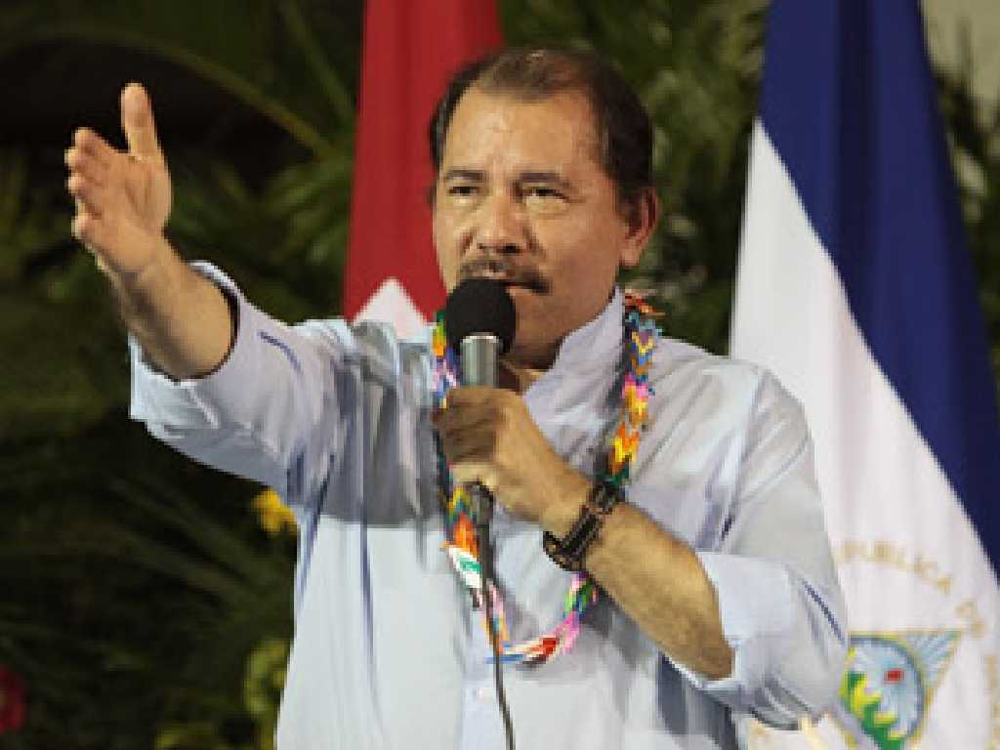
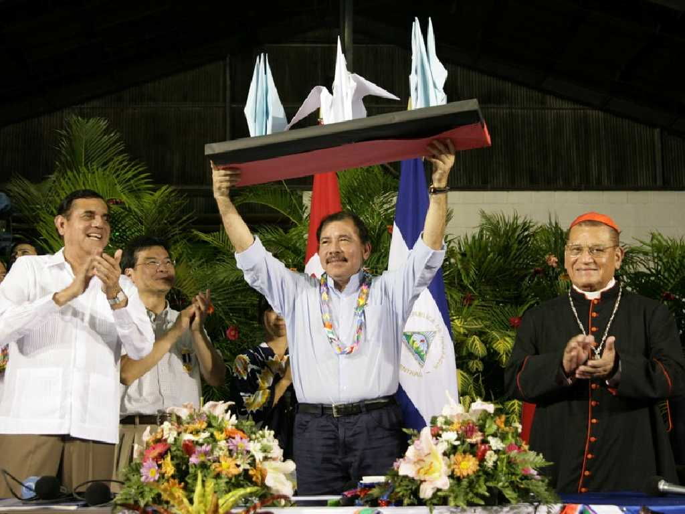
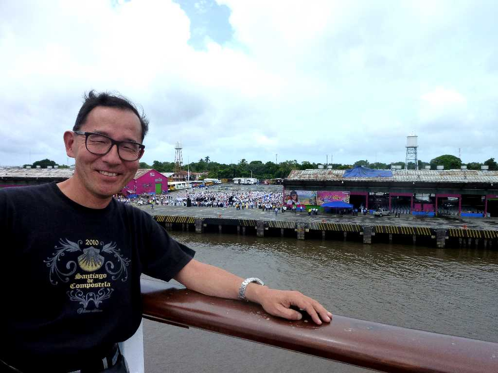

 
September 28 2010 Daniel Ortega The President of Nicaragua Corinto
ニカラグアと日本との交流会で日本から積み込んで来た日本で使われていた救急車の寄付に対するお礼の演説をするダニエルオルテガ大統領

September 28 2010 SS Oceanic in Corinto Port
すきやきソング(上を向いて歩こう)のバンド演奏で出迎えてくれたニカラグアの学生グラスバンド達